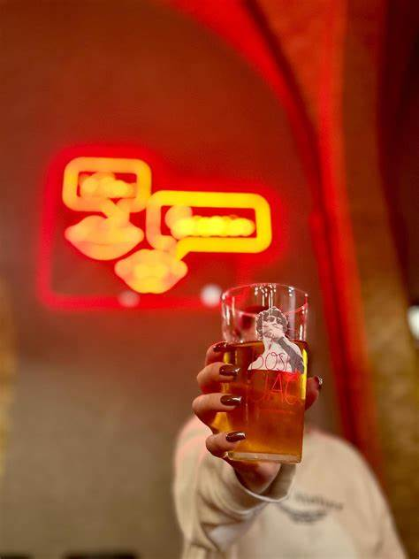
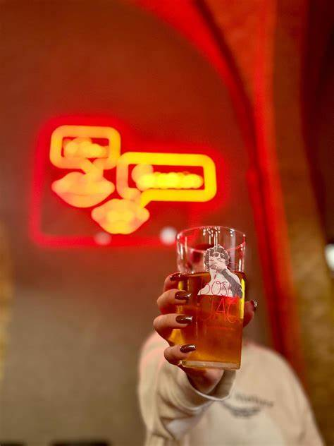

Bajgle Króla Jana
Przytulna restauracja z menu opartym na bajglach i świeżych składnikach. Idealna na lunch.
Adres: ul. Rynek Nowy 6, 70-533 Szczecin
Kontakt: tel. 91 456 78 90

Autorska kuchnia, eleganckie wnętrze i doskonała obsługa w jednej z najlepiej ocenianych restauracji miasta.
Adres: ul. Marszałka Józefa Piłsudskiego 18, 70-460 Szczecin
Kontakt: tel. 91 123 45 67
Przytulna restauracja z menu opartym na bajglach i świeżych składnikach. Idealna na lunch.
Adres: ul. Rynek Nowy 6, 70-533 Szczecin
Kontakt: tel. 91 456 78 90
Różnorodność regionu przekładamy na talerz i okraszamy muzyką. Mamy nadzieję, że ten niepowtarzalny miks przypadnie Państwu do gustu.
Adres: Krzysztofa Kolumba 2D, 70-035 Szczecin
Kontakt: tel. 730 002 242
Magiczna Restauracja z burgerami, pizza i naleśnikami. Sklepik z gadżetami z filmu Harry Potter.
Adres: Księdza Piotra Ściegiennego 7a/u2, 70-453 Szczecin
Kontakt: tel. 697 925 124


Nowoczesna pizzeria w neogotyckim budynku o wysokich sklepieniach serwująca pizzę z pieca opalanego drewnem i aperitify.
Adres: plac Stefana Batorego 4, 70-207 Szczecin
Kontakt: tel. 607 477 091
 


Bogate smaki i niepowtarzalne wnętrza. Każdy ma swój odrębny charakter. Manekin to coś więcej niż jedzenie, to styl bycia. Poszukaj swojego ulubionego. …
Adres: Generała Ludomiła Rayskiego 16/U, 70-442 Szczecin
Kontakt: tel. 605 182 386


Epicka to według wielu ludzi najlepsza włoska restauracja w całym mieście. W jej menu znajdziemy popularne dania włoskie jak i specjały tylko dla tej restauracji.
Adres: Księcia Bogusława X 1-2 1, 71-899 Szczecin
Kontakt: ig: @epicka.szczecin
Świetna restauracja z typowo tajskim jedzeniem, idealna dla miłośników ostrego jedzenia z opcjami wege.
Adres: Jagiellońska 11, 70-437 Szczecin
Kontakt: tel. 500 711 923


Koreańska restauracja, która opiera swoje menu na daniach z kimchi. Idealne miejsce dla osób które lubią ostrą kuchnie azjatycką.
Adres: Śląska 42, 70-432 Szczecin
Kontakt: ig: @ohmykimchi.szczecin
Ziemniak i spółka to miejsce które w swoim menu ma dania z rożną formą ziemniaków, idealne dla miłośników tego warzywa.
Adres: Dworcowa 19/1u, 70-472 Szczecin
Kontakt: tel. 519 426 428